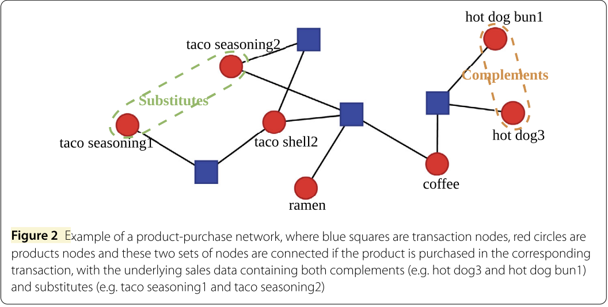

This article bridges the gap between theoretical research and practical application by exploring and rewriting the methodology of the paper Extracting Complements and Substitutes from Sales Data: A Network Perspective (Tian et al., 2021). The goal is to make the math and intuition accessible to applied data scientists, and to show how the ideas translate directly into a large-scale Spark implementation. Sincere gratitude to the authors for their foundational contributions.
Knowing which products complement or substitute each other unlocks a wide range of business decisions that would otherwise rely on intuition or expensive field studies.
| Application | How complement / substitute knowledge helps | Example |
|---|---|---|
| Shelf & aisle placement | Place complements near each other to trigger additional purchases. | Salad tomatoes next to cucumbers → both sell more. |
| Product bundling | Bundle strong complements at a slight discount to increase basket size. | Hot dogs + hot dog buns bundle deal. |
| Inventory management | When a product is out of stock, surface its substitutes automatically. | Brand A pasta out of stock → recommend Brand B pasta. |
| Targeted promotions | Discount a complement to drive sales of a high-margin partner product. | Discount coffee filters to boost premium coffee sales. |
| Personalised recommendations | "Customers also bought…" powered by complement scores. | Add pasta to cart → suggest pasta sauce and parmesan. |
| Assortment optimisation | Identify redundant substitutes and rationalise the product range. | Five near-identical own-brand cereals → keep the top two. |
| Pricing strategy | Raise the price of a substitute only when its pair is on promotion. | Raise Brand B price when Brand A is on sale. |
| Trend detection | Track how complement/substitute relationships shift over time. | Oat milk becoming a substitute for dairy milk over 12 months. |
Rather than relying on price elasticity data (which requires controlled experiments) or word embeddings (which are hard to interpret), this paper models sales data directly as a bipartite network — a graph with two distinct types of nodes.

The entire network is encoded in a single matrix called the biadjacency matrix \(A^{(b)}\):
Every row is one basket; every column is one product. A 1 in cell \((l, i)\) means "product \(i\) was in basket \(l\)." This sparse binary matrix is the only input the entire method needs.
The method rests on six assumptions that translate economic intuition into measurable network properties. The first four define what complements and substitutes look like in the data; the last two control for noise.
pre_supplementary_pairs is filtered to
same-department pairs with low co-occurrence, then further filtered to those sharing
at least one common complement.
A null model is a randomised version of the network that preserves certain structural properties (like how popular each product is) but removes any genuine product relationships. By comparing the real network to the null model, we can identify co-occurrences that are statistically surprising.
Two null models are proposed, in increasing order of sophistication:
The ER model is the simpler of the two. It asks: "If each product independently appeared in each transaction with some fixed probability, how many shared transactions would we expect for a pair of products?"
Each product \(i\) is assigned a probability \(p_i\) of appearing in any given transaction. This probability is estimated directly from the data:
Intuitively: if a product appears in 10% of all baskets, its probability is 0.10. A very popular product (milk) has a high \(p_i\); a niche product has a low \(p_i\).
Under this model, the probability that a single transaction contains both products \(i\) and \(j\) is simply \(p_i \cdot p_j\) (since they appear independently). The number of shared transactions \(cn_{ij}\) therefore follows a Binomial distribution:
For large \(n_t\), the Central Limit Theorem lets us approximate this with a Normal distribution:
We declare a co-occurrence significantly more than expected (→ complement candidate) if:
And significantly less than expected (→ substitute candidate) if:
Here \(\Phi^{-1}(\cdot)\) is the inverse CDF of the standard Normal distribution, \(\alpha_m\) is the significance level for "more" (e.g., 0.01), and \(\alpha_l\) is the significance level for "less" (e.g., 0.20).
The BiCM is a more realistic null model. It preserves both the degree of each product node (how popular each product is) and the degree of each transaction node (how large each basket is). This means the null model accounts for the fact that a large basket will naturally contain more product pairs.
Imagine each product node has \(d_i^{(p)}\) "stubs" (half-edges) and each transaction node has \(d_l^{(t)}\) stubs. The BiCM randomly connects these stubs, but only allows edges between transaction nodes and product nodes (never product–product or transaction–transaction). The resulting random network has the same degree sequence as the real data, but no genuine product relationships.
Under the BiCM, the probability that products \(i\) and \(j\) both appear in transaction \(l\) is:
Notice that \(p_{ilj}\) varies per transaction: a large basket (high \(d_l^{(t)}\)) contributes more to the expected co-occurrence than a small basket. This is the key improvement over the ER model.
Summing \(p_{ilj}\) over all transactions gives the expected number of shared transactions:
moment_simplified.
The number of shared transactions \(cn_{ij}\) is a sum of independent Bernoulli variables (one per transaction), each with probability \(p_{ilj}\). This is called a Poisson binomial distribution. For sparse networks where each \(p_{ilj}\) is small, Le Cam's theorem guarantees it can be well approximated by a simpler Poisson distribution:
This approximation is valid because real retail networks are sparse — most products appear in only a small fraction of all transactions, so \(p_{ilj}\) is tiny for most pairs.
Let \(F_{ij}(y)\) be the cumulative distribution function of \(\text{Poisson}(\mu_{ij})\):
We then apply two one-sided tests:
| Test | Condition | Interpretation | Notebook threshold |
|---|---|---|---|
| Significantly more | \(1 - F_{ij}(cn_{ij}) < \alpha_m\) | Co-occurrence is surprisingly high → complement candidate | p_value > 0.85 |
| Significantly less | \(F_{ij}(cn_{ij}) < \alpha_l\) | Co-occurrence is surprisingly low → substitute candidate | p_value < 0.15 |
count ≥ 5) must be applied
before the significance test to ensure only meaningfully co-occurring pairs are
classified as complements.
The significance tests produce two binary (unweighted) unipartite networks — graphs where every node is a product and edges indicate a statistically significant relationship.
| Matrix | Meaning | Entry = 1 when… |
|---|---|---|
| \(A^{(m)}\) | "More" network | Products \(i\) and \(j\) co-occur significantly more than expected |
| \(A^{(l)}\) | "Less" network | Products \(i\) and \(j\) co-occur significantly less than expected |
By Assumption 1, complements are simply the pairs that co-occur significantly more than expected. So the complement network is identical to \(A^{(m)}\):
By Assumption 3, substitutes must satisfy two conditions simultaneously:
Both conditions are combined with an element-wise (Hadamard) product:
The indicator matrix \(\mathbf{I}_{\{(A^{(m)})^T A^{(m)} > 0\}}\) acts as a gate: it is 1 for a pair \((i,j)\) only if there exists at least one product \(k\) such that both \(i\) and \(j\) are complements of \(k\). Without this gate, any two unpopular products that happen to rarely co-occur would be labelled substitutes — which is clearly wrong.
At this stage both networks are unweighted — they only tell us whether a relationship exists, not how strong it is. The next two sections add weights.
simo(i, j)
Knowing that two products are complements is useful, but knowing how strongly
complementary they are is even more valuable. The paper proposes a family of measures
derived from a weighted cosine similarity on the bipartite network. The simplest and
most practical is the original measure, simo.
Imagine placing a unit of "signal" on product \(i\) and letting it flow one step through the bipartite network — from product \(i\) to all transactions containing \(i\), weighted by \(1/d_l^{(t)}\) (the inverse basket size). The resulting distribution over transactions is the "fingerprint" of product \(i\).
Two products are strongly complementary if their fingerprints overlap a lot — i.e., they tend to appear in the same transactions, especially small transactions where the co-occurrence is less likely to be coincidental.
| Term | What it computes | Why it matters |
|---|---|---|
| \(A_{li} \cdot A_{lj}\) | 1 if both products appear in transaction \(l\), else 0 | Selects only transactions where both products co-occur |
| \(\dfrac{1}{d_l^{(t)}}\) | Inverse basket size of transaction \(l\) | Discounts large baskets. If a basket has 50 items, any two products in it are likely there by coincidence. A basket of 2 items is a much stronger signal of genuine complementarity. |
| Numerator sum | \(\sum_l A_{li} A_{lj} / d_l^{(t)}\) | Total "weighted co-occurrence" of products \(i\) and \(j\) |
| Denominator \(\sum_h A_{hi}/d_h^{(t)}\) | Total weighted occurrence of product \(i\) alone | Normalises by how often each product appears individually, so that popular products don't automatically get high scores with everything. |
| \(\sqrt{\cdots \times \cdots}\) | Geometric mean of the two individual weighted occurrences | Makes the score symmetric: \(simo(i,j) = simo(j,i)\), and ensures \(simo(i,i) = 1\) (a product is perfectly complementary to itself). |
The simo score is computed for all product pairs, but only pairs already
identified as complements (i.e., \(A^{(c)}_{ij} = 1\)) are assigned a non-zero weight.
This is done via an element-wise product:
\(A^{(c)}\) acts as a mask: it zeroes out the score for any pair
that did not pass the significance test, no matter how high their raw simo
value might be. This prevents noise from inflating the complement network.
In the notebook, the numerator is computed by joining the sales data on
transaction_id (to find co-occurring pairs) and summing
1/d_t per pair. The denominator is computed by summing
1/d_t per product individually, then joining back. The critical fix
(Bug 1) was changing F.sum(F.col("tcin_1")) to
F.sum(F.col("inverse")) in the denominator — the original code was
summing the product ID number instead of the inverse transaction degree.
sims(i, j)Once we have the weighted complement network \(W^{(c)}\), we can measure how substitutable two products are. The core idea (Assumption 4) is:
| Term | What it computes | Why it matters |
|---|---|---|
| \(\sum_k W^{(c)}_{ik} W^{(c)}_{jk}\) | Dot product of the two complement vectors | Large when both products have high complementarity scores with the same third products \(k\). This is the numerator of cosine similarity. |
| \(\sum_p (W^{(c)}_{ip})^2\) | Squared norm of product \(i\)'s complement vector | Normalises for the overall "strength" of product \(i\)'s complement relationships, so that a product with many strong complements doesn't automatically score high with everything. |
| \(\sqrt{\cdots \times \cdots}\) | Geometric mean of the two norms | Makes the score symmetric and bounded in \([0, 1]\). |
simo scores with: cucumber (0.8), lettuce (0.7),
olive oil (0.5).simo scores with: cucumber (0.75), lettuce (0.65),
olive oil (0.45).sims → strong substitutes. ✓
The paper (§3.4.2, Appendix B) explicitly warns that low-quality complementarity
scores must be removed before computing sims. If near-zero
simo values are included, they add noise to the complement vectors and
bias the cosine similarity. The paper calibrates a threshold \(\theta_c\) at the
0.35 quantile of non-zero simo values (approximately 0.011 in their
dataset). In the notebook:
theta_c = measure_complementary.approxQuantile('simo', [0.35], 0.01)[0]measure_complementary = measure_complementary.filter(F.col('simo') >= theta_c)
Just as with complements, the sims score is masked by the binary
substitute network \(A^{(s)}\):
Only pairs that passed the significance test (low co-occurrence + shared complement) receive a non-zero substitutability score. The resulting matrix \(W^{(s)}\) is the final output: a weighted network where edge weight = strength of substitutability.
The full method goes from raw transaction data to two weighted product networks in seven steps:
moment_simplified
count ≥ 5, then classify as complement or substitute candidate
simo
Weighted cosine similarity on bipartite network; apply \(\theta_c\) threshold
sims
Cosine similarity over thresholded complement vectors
| Parameter | Value | Meaning |
|---|---|---|
| \(\alpha_m\) | 0.01 | Significance level for "significantly more" co-occurrence (complement test) |
| \(\alpha_l\) | 0.20 | Significance level for "significantly less" co-occurrence (substitute test) |
| \(\theta_c\) | 0.35 quantile of non-zero simo |
Threshold below which complementarity scores are zeroed out before computing sims |
MIN_CO_OCCURRENCE |
5 (practical addition for large-scale data) | Minimum observed co-occurrence before applying the Poisson CDF test |
| Bug | Symptom | Root cause | Fix |
|---|---|---|---|
| Bug 1 (Critical) | simo ≈ 1e-10, sims ≈ 1e-8 |
F.sum(F.col("tcin_1")) summed product IDs instead of 1/d_t |
Changed to F.sum(F.col("inverse")) |
| Bug 2 | 1.1B complementary pairs (too many) | Pairs with count=1 and tiny expected mean trivially pass the CDF test | Added count ≥ 5 filter before significance test |
| Bug 2b | 700K substitute pairs (too few) | Zero-cooccurrence pairs (true substitutes) absent from co-occurrence matrix | Generate same-department zero-count candidates; compute proper \(p = e^{-\mu}\) |
| Bug 3 | Same pair repeated 10+ times in output | drop_duplicates called before tcin_3 fan-out was resolved |
Aggregate countDistinct(tcin_3) first, then dedup |
| Bug 4 | sims biased by noise |
No \(\theta_c\) threshold applied before computing sims |
Apply approxQuantile('simo', [0.35]) threshold per paper Appendix B |
| Bug 5 | False substitute signals for rare product pairs | Zero-count pairs assigned blanket p_value=0 regardless of \(\mu\) |
Compute p_value = exp(-expected_mean) per pair; filter by p_value < 0.15 |